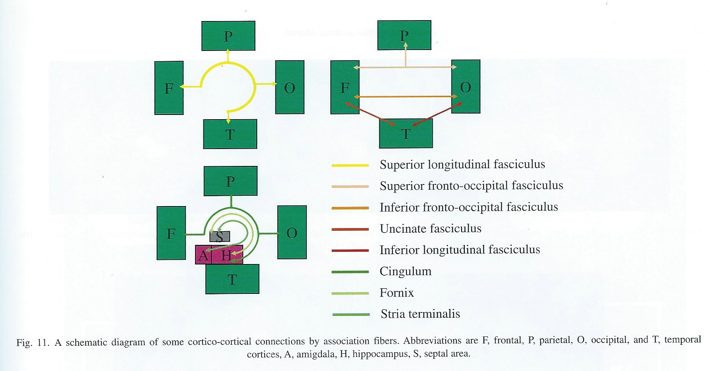

Fun
Resources
Harvard Brain Atlas
Brain anatomy through dance
Directional terms
- Anterior/Posterior
- Medial/Lateral
- Superior/Inferior
- Dorsal/Ventral
- Rostral/Caudal

Bipeds vs. quadripeds

Image axes
- Horizontal/Axial
- Coronal/Transverse/Frontal
- Sagittal (from the side)

Supporting structures
Meninges (outside -> in)
- Dura mater (‘tough mother’)
- Arachnoid membrane
- Subarachnoid space
- Pia mater (‘gentle mother’)
- Cerebrospinal fluid (CSF) between Arachnoid membrane and Pia Mater

Ventricular system
- Also known as cerebral ventricles
- Lateral (1st & 2nd)
- Forebrain/telencephalon
- 3rd
- Diencephalon
- Cerebral aqueduct
- Midbrain
- 4th
- Hindbrain

- Ventricles filled with cerebrospinal fluid (CSF)
- CSF clears metabolites during sleep (Xie et al., 2013)?
- Blockage of CSF flow -> hydrocephalus
Blood Supply
- Carotid & basilar arteries converge on Circle of Willis
- Anterior, Middle, and Posterior Cerebral arteries main output


By <a href=“//commons.wikimedia.org/wiki/User:BruceBlaus” title=“User:BruceBlaus”>BruceBlaus</a> - <span class=“int-own-work” lang=“en”>Own work</span>, CC BY-SA 4.0, Link
Blood/brain barrier
- Cells forming blood vessel walls tightly packed
- Active transport of molecules typically required
![[[@Abbott2006-jw]](http://dx.doi.org/10.1038/nrn1824)](https://media.springernature.com/full/springer-static/image/art%3A10.1038%2Fnrn1824/MediaObjects/41583_2006_Article_BFnrn1824_Fig2_HTML.jpg?as=webp)
![[[@Abbott2006-jw]](http://dx.doi.org/10.1038/nrn1824)](https://media.springernature.com/full/springer-static/image/art%3A10.1038%2Fnrn1824/MediaObjects/41583_2006_Article_BFnrn1824_Fig3_HTML.jpg?as=webp)
Area Postrema
- In brainstem, blood-brain barrier thin
- Chemoreceptors (chemical receptors) detect toxins, trigger emesis if necessary
![[[@Begg2013-fb]](http://dx.doi.org/10.1038/nrendo.2013.136)](https://media.springernature.com/lw685/springer-static/image/art%3A10.1038%2Fnrendo.2013.136/MediaObjects/41574_2013_Article_BFnrendo2013136_Fig2_HTML.jpg?as=webp)
Organization of the Nervous System
- Central Nervous System (CNS)
- Brain
- Spinal Cord
- (Everything encased in bone)
- Peripheral Nervous System (PNS)
- Somatic division
- Autonomic division
- Sympathetic
- Parasympathetic
Organization of the CNS
| Major division | Ventricular Landmark | Embryonic Division | Structure |
|---|---|---|---|
| Forebrain | Lateral | Telencephalon | Cerebral cortex |
| Basal ganglia | |||
| Hippocampus, amygdala | |||
| Third | Diencephalon | Thalamus | |
| Hypothalamus | |||
| Midbrain | Cerebral Aqueduct | Mesencephalon | Tectum, tegmentum |
| Hindbrain | 4th | Metencephalon | Cerebellum, pons |
| – | Mylencephalon | Medulla oblongata |
- Forebrain, midbrain, hindbrain terminology derives from embryonic stages in CNS development.

Hindbrain

- Hindbrain: structures adjacent (or caudal to) 4th ventricle
- Medulla oblongata
- Cerebellum
- Pons

Medulla oblongata
- Cardiovascular regulation
- Muscle tone
- Fibers of passage
- Ascending fibers (from body), a.k.a. afferents
- Descending fibers (exiting brain), a.k.a., efferents

Cerebellum
- “Little brain”
- Dorsal to pons
- Movement coordination, simple learning (classical conditioning)
- Largest number of neurons in the brain

Pons
- Bulge on ventral brain stem
- Neuromodulatory nuclei
- Nucleus (anatomically discrete cluster of neurons
- Neuromodulators: neurotransmitters that modulate/alter function of other neurons
- e.g., Serotonin (5-HT), norepinephrine (NE), acetylcholine (ACh), dopamine (DA)
- Relay to cerebellum
Midbrain
- Tectum (roof), dorsal
- Tegmentum (floor), ventral

Tectum
- “Roof” of the midbrain
- Superior and inferior colliculus (colliculi is plural for ‘little hill’)
- Superior colliculus: Reflexive orienting of eyes, head, ears (superior colliculi)
- Input from FEF, parietal lobe
- Output to cranial nerve nuclei (III, IV, VI) in tegmentum, pons
- Inferior colliculus: Auditory processing (from brainstem to auditory thalamus)


Tegmentum
- “Floor” of the midbrain
- Species-typical movement sequences
- Neuromodulatory nuclei
- Norepinephrine (NE)
- Serotonin (5-HT)
- Dopamine (DA) – from ventral tegmental area (VTA)

Forebrain
- Diencephalon
- Telencephalon

Diencephalon (‘between brain’)
- Thalamus
- Hypothalamus


Thalamus
- Input to cortex
- Functionally distinct nuclei
- Lateral geniculate nucleus (LGN), vision
- Medial geniculate nucleus (MGN), audition
- Pulvinar, attention?

Hypothalamus
- Five Fs: fighting, fleeing/freezing, feeding, and reproduction
- Controls pituitary gland (“master” gland)
- Anterior pituitary (indirect release of hormones)
- e.g., Corticotropin Releasing Hormone (CRH) -> release of cortisol from Adrenal Cortex (adjacent to kidney)
- Posterior pituitary (direct release of hormones)
- Oxytocin
- Vasopressin (aka, Arginine Vasopressin – AVP; Anti-diuretic Hormone – ADH)
- Anterior pituitary (indirect release of hormones)


Telencephalon
- Basal ganglia
- Hippocampus, amygdala
- Cerebral cortex
Basal Ganglia
- Skill and habit learning
- Linked to Tourette syndrome, obsessive-compulsive disorder (OCD), addiction, movement disorders
- Example: Parkinson’s Disease

- Striatum
- Caudate nucleus
- Putamen
- Globus pallidus
- Subthalamic nucleus
- Substantia nigra (tegmentum)

Hippocampus
- Hippocampus means “sea horse”

- Medial to lateral ventricles
- Store memories of specific facts (semantic memory) or events (episodic memory)
- Place memory in non-human animals (& humans?)
- Fornix (axon fiber bundle) projects to (mammillary bodies of) hypothalamus

Amygdala (“almond”)
- Physiological state, behavioral readiness, affect
- NOT the fear center! (LeDoux, 2015).
- Projection to hypothalamus

Cerebral Cortex
- Cerebral hemispheres
- Groove (sulcus or sulci)
- Bumps (gyrus or gyri)
- Grey vs. white matter
- Lobes
Lateral view

Medial view

Nissl stain

Lobes of the cerebral cortex
- Frontal
- Temporal
- Parietal
- Occipital
- Names derive from underlying bones of the skull


Longitudinal fissure
- Also known as superior longitudinal fissure
- Divides the cerebral hemispheres

Lateral sulcus/fissure
- Also known as Sylvian Fissure
- Divides frontal from temporal lobe

Central sulcus
- Also known as Rolandic Fissure or Fissure of Rolando
- Divides frontal from parietal lobe

Frontal lobe
- Anterior to central sulcus
- Superior to lateral fissure
- Dorsal to temporal lobe

- Primary motor cortex (M-I or M1)
- Precentral gyrus

- Secondary motor areas
- Supplementary motor cortex (SMC)
- Frontal eye fields (FEF)
- Prefrontal cortex
- Planning, problem solving, working memory…?
- Secondary olfactory cortex
![[[@Saive2014-uh]](http://doi.org/10.3389/fnbeh.2014.00240)](https://www.frontiersin.org/files/Articles/92469/fnbeh-08-00240-HTML/image_m/fnbeh-08-00240-g001.jpg)
Figure 1. Schematic view of the human olfactory system. The primary and secondary olfactory cortices are represented in blue and green, respectively. Amyg, amygdala; Ento, entorhinal cortex; Hipp, hippocampus; OFC, orbitofrontal cortex; PC, piriform cortex; Thal, thalamus (adapted from Royet et al., 2014).
- Basal forebrain
- Nucleus accumbens (NAcc), part of ventral striatum
Cingulate Gyrus

Inferior Frontal Gyrus (IFG)

- Home to Broca’s Area
Middle Frontal Gyrus (MFG)

- Home to Dorsolateral Prefrontal Cortex (DLPFC)
Superior Frontal Gyrus (SFG)
- Brodmann Area 8
- Frontal Eye Fields (FEF)

Temporal lobe
- Ventral to frontal, parietal lobes
- Inferior to lateral fissure

- Primary auditory cortex (A-I or A1)

Superior Temporal Sulcus

- Object, face recognition; biological motion processing
- Language processing
Inferior Temporal Gyrus (ITG)

- Continuation of ventral visual processing stream

Entorhinal Cortex (ER)

- Storage of memories about events, objects
- Amygdala, hippocampus
Parietal lobe
- Caudal to frontal lobe
- Dorsal to temporal lobe
- Posterior to central sulcus
- Primary somatosensory cortex (S-I or S1)
- information from sensors in skin, muscles, tendons, joints and viscera
- Post-central gyrus

- Perception of spatial relations, action planning
Inferior Parietal Lobule

- e.g., language, mathematical operations, body image, etc.
Superior Parietal Lobule

- damage to can cause spatial hemi-neglect

Occipital lobe
- Caudal to parietal & temporal lobes
- Primary visual cortex (V1)
- Secondary visual areas (V2…V7)

Insular cortex (insula)
- medial to temporal lobe
- deep inside lateral fissure

- Primary gustatory cortex
- Self-awareness, interpersonal experiences, motor control, interoception
Brodmann Areas

- Cytoarchitectonic (cellular architecture) differences in cerebral cortex
- Numbered areas, e.g. V1 == Area 17


White matter pathways
- Brainstem
- Projection fibers
- Association fibers
- Commissural fibers
(Oishi, Faria, Zijl, & Mori, 2010), Chapter 3, Figure 1.
Brainstem projections
- Corticospinal tract (descending/efferent)
- Dorsal column/medial lemniscus (ascending/afferent)
- Superior/inferior cerebellar peduncles (from/to cerebellum)
![[[@oishi2010mri]](https://books.google.com/books?hl=en&lr=&id=v8MWjTpVUAYC&oi=fnd&pg=PT1&dq=mri+atlas+of+human+white+matter&ots=mV146PeNPd&sig=2HjnDc0IxdCj-EVap1Gr77XIw7U#v=onepage&q=mri%20atlas%20of%20human%20white%20matter&f=false), Chapter 3, Figure 8.](img/projection-fiber-schematic.jpg)
(Oishi, Faria, Zijl, & Mori, 2010), Chapter 3, Figure 8.
Projection fiber tracts
- Internal capsule
- Thalamic radiation
- Cortico-{pontine, bulbar, reticular} tracts

![[[@oishi2010mri]](https://books.google.com/books?hl=en&lr=&id=v8MWjTpVUAYC&oi=fnd&pg=PT1&dq=mri+atlas+of+human+white+matter&ots=mV146PeNPd&sig=2HjnDc0IxdCj-EVap1Gr77XIw7U#v=onepage&q=mri%20atlas%20of%20human%20white%20matter&f=false), Chapter 3, Figure 11.](img/cortical-white-matter.jpg)
(Oishi, Faria, Zijl, & Mori, 2010), Chapter 3, Figure 11.
Cortical white matter tracts
- Superior/inferior longitudinal fasciculus
- Arcuate fasciculus part of sup. long. f.
- Superior/inferior fronto-occipital fasciculus
- Cingulum, fornix (hyp-hip), stria terminalis (hyp-amyg)
Commissural fibers
- Corpus callosum
- Anterior commissure (AC)
- Posterior commissure (PC)


Anterior, Posterior Commissures

Spinal cord
- Spinal column w/ vertebrae
- Moving rostral -> caudal…
- Cervical (8), thoracic (12), lumbar (5), sacral (5), coccygeal (1)
- Spinal segments & 31 nerve pairs
- Cauda equina

- Spinal segments (rostral to caudal) ennervate specific body segments
- When focusing on the skin, these are called dermatomes

- Dorsal/Ventral
- Dorsal root (sensory)
- Ventral root (mostly motor)
- Grey (interior) vs. white matter (exterior)
- Cerebral cortex opposite (grey exterior, white interior)


Organization of the PNS
- Somatic division
- Autonomic division (Autonomic Nervous System)
Somatic division
Cranial nerves
- Afferents (input), efferents (output), or mixed
- Innervate head and neck
- Olfactory (I), optic (II), (VIII) auditory, vagus (X), etc.
- Spinal nerves

Spinal nerves

Autonomic nervous system
- CNS & PNS components
- Controls “vegetative functions”
- Limited voluntary control
- Two divisions
- Sympathetic
- Parasympathetic

- Bipolar (continuum) vs. bivariate autonomic space (Berntson, Cacioppo, & Quigley, 1991)

Sympathetic division
- Prepares body for action
- “Fight or flight”
- Spinal cord
- ganglion chain along spinal column to End organs
- Neurotransmitters (NTs)
- Preganglionic: ACh
- Post: NE
Parasympathetic division
- “Around” sympathetic
- Restorative function
- “Rest & digest”
- Spinal cord (or Vagus n. from Xth cranial n.) -> ganglia near end organs -> end organ
- NT: ACh